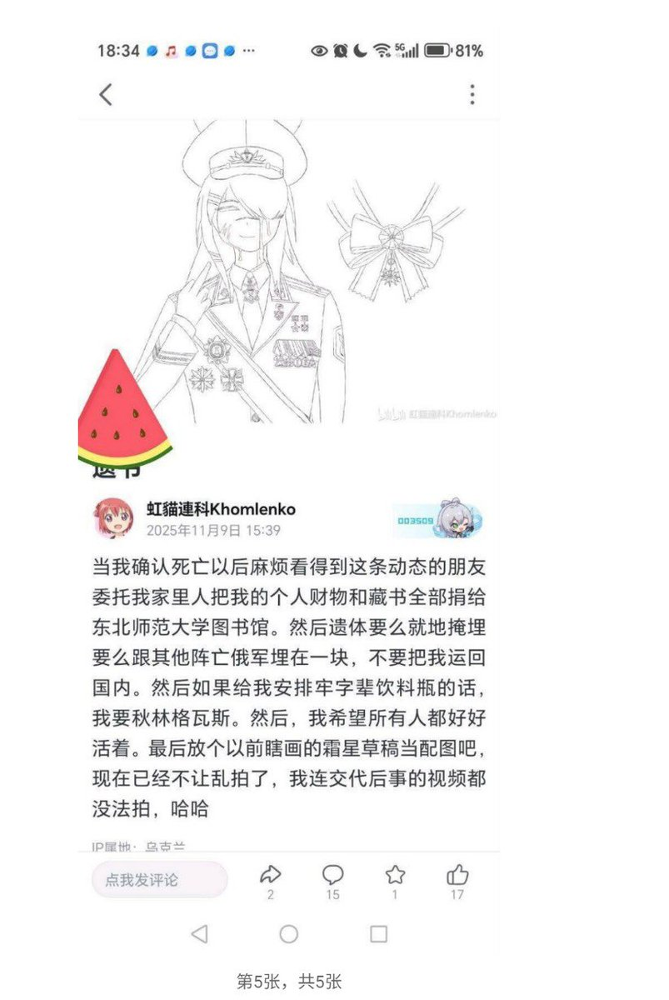
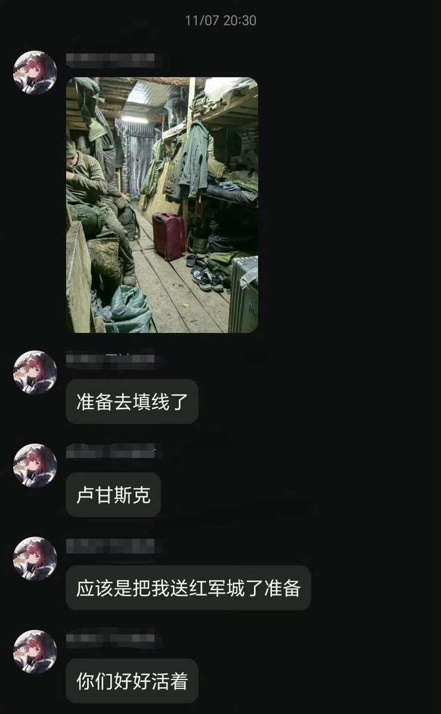

RT @HANLIANYI331: 这种人的精神状态是有很严重的问题的，他从最开始就是奔着自杀去的，即使没有俄乌战争，如果没有外人对他进行危机干预，他也会选择其他方式死亡。
我在危机干预过程中遇到过很多和这种类似的情况，对现实生活绝望后，精神出现问题，只得于寄托于某个宏大叙事…

我在危机干预过程中遇到过很多和这种类似的情况，对现实生活绝望后，精神出现问题，只得于寄托于某个宏大叙事…


这种人的精神状态是有很严重的问题的，他从最开始就是奔着自杀去的，即使没有俄乌战争，如果没有外人对他进行危机干预，他也会选择其他方式死亡。
我在危机干预过程中遇到过很多和这种类似的情况，对现实生活绝望后，精神出现问题，只得于寄托于某个宏大叙事（他们自愿被宏大叙事洗脑，然后逃避现实） https://t.co/hpdgsRiUtm
我在危机干预过程中遇到过很多和这种类似的情况，对现实生活绝望后，精神出现问题，只得于寄托于某个宏大叙事（他们自愿被宏大叙事洗脑，然后逃避现实） https://t.co/hpdgsRiUtm